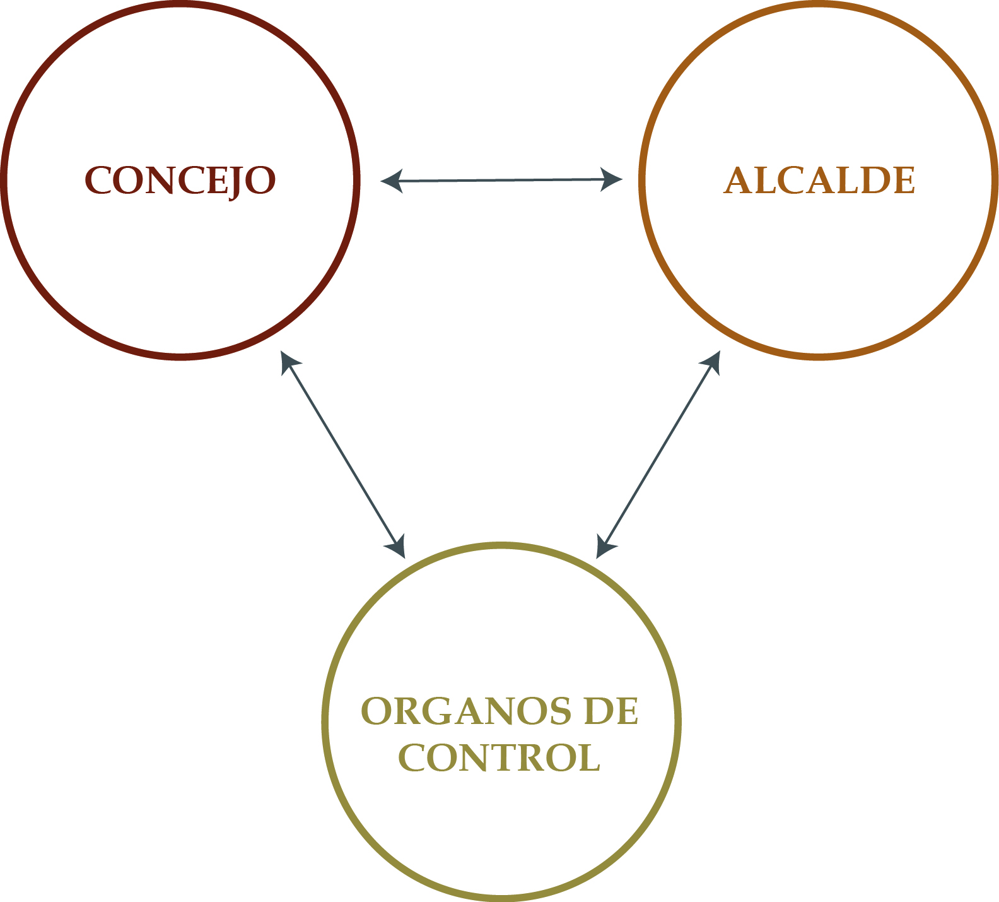

Unidad 2.2 Régimen político, administrativo y fiscal especial del Distrito Capital
Esta Sección da cuenta de los antecedentes que dieron origen al actual Estatuto Orgánico del Distrito Capital, así como la distribución de composición de los órganos del gobierno y de la administración de la ciudad.
1.1. Antecedentes
En 1945, al final del gobierno del presidente López Pumarejo, se aprobó una Reforma Constitucional, la que en su artículo 5º estableció: “la ciudad de Bogotá, capital de la República, será organizada como un Distrito Especial, sin sujeción al régimen municipal ordinario, dentro de las condiciones que fije la ley. La ley podrá agregar otro u otros Municipios circunvecinos al territorio de la capital de la República, siempre que sea solicitada la anexión por las tres cuartas partes de los concejales del respectivo municipio”. A partir de esa reforma el alcalde de Bogotá, en calidad de agente del presidente, era de su libre nombramiento y remoción 1.
No obstante, por diferentes razones, especialmente de tipo político, los gobiernos que lo sucedieron no expidieron reglamentación sobre el Distrito Especial y solo hasta 1954, durante la dictadura del general Rojas Pinilla, considerando que el artículo 199 de la Constitución Nacional había ordenado que la ciudad de Bogotá se organizara “como un Distrito especial, sin sujeción al régimen municipal ordinario, dentro de las condiciones que fije la ley”, expidió el 17 de diciembre de 1954 el Decreto Legislativo 3640 con vigencia a partir del 1° de enero de 1955, en el cual se estableció que “la ciudad de Bogotá, capital de la República, se organiza como un Distrito Especial, sin sujeción al régimen municipal ordinario dentro de las condiciones que fijará la ley” 2.
Esta disposición perdió vigencia de facto con la caída de la dictadura en 1957 y Bogotá queda, de nuevo, sumida en un limbo jurídico, hasta que durante el gobierno de Lleras Restrepo y en desarrollo de la Reforma de 1968 se expidió el Decreto-Ley 3133. A pesar de que algunos de sus artículos habían sido declarados inexequibles por la Corte Suprema de Justicia al considerarlos como reglas normativas de exclusiva competencia del Cabildo Distrital y no del legislador ni del gobierno nacional, en la ciudad siguió aplicándose el artículo 198 de la Constitución de 1886 que había establecido “diversas categorías de municipios de acuerdo con su población, recursos fiscales e importancia económica, y señalar distinto régimen para su administración”.
Fue solo hasta 1986 cuando se expidió la Ley 11 Por la cual se dictó el Estatuto Básico de la Administración Municipal y se ordenó la participación de la comunidad en el manejo de los asuntos locales; pocos meses después el gobierno dictó el Decreto-Ley 1333 Por el cual se expidió el Código de Régimen Municipal, que, entre otras, derogó la ya vetusta Ley 4ª de 1913 y modernizó la administración local. Desde entonces el Congreso no se volvió a ocupar legislativamente de la ciudad capital y, mediante el Acto legislativo Núm. 1° de 1986, se estableció la elección popular de alcaldes.
Según el exalcalde Jaime Castro con estas nuevas disposiciones surgieron dudas jurídicas razonables respecto de las normas aplicables al Distrito Especial, hasta que, el 16 de enero de 1991, seis meses antes de que se promulgara la Constitución de 1991, el Congreso expidió la Ley 8ª la cual determinó que “De conformidad con el artículo 199 de la Constitución Política de 1886, Bogotá es Distrito Especial. Con lo no previsto para Bogotá en su régimen administrativo especial, se le aplicarán las disposiciones legales comunes a todos los municipios, que sean compatibles con aquel régimen” 3.
El 4 de julio de 1991 se promulgó la Constitución que en el Capítulo 4º, Del Régimen Especial, determinó que Bogotá, capital de la república y del departamento de Cundinamarca, se organiza como Distrito Capital 4. Según el artículo 322 su régimen político, fiscal y administrativo será el que determinen la Constitución, las leyes especiales y las disposiciones vigentes para los municipios. A las autoridades distritales les corresponde garantizar el desarrollo armónico e integrado de la ciudad y la eficiente prestación de los servicios a cargo del Distrito.
El artículo transitorio 41 de la Constitución de 1991, fijó un plazo de dos años contados a partir de la promulgación, el 4 de julio de 1991, para que al Congreso dictara la Ley reglamentaria de los artículos 322, 323 y 324 de la Carta sobre el régimen especial para el Distrito Capital de Bogotá. De no hacerlo, el Gobierno expediría, por una sola vez, las normas correspondientes.
Transcurridos los dos años de plazo establecido, el 21 de julio de 1993, el gobierno del presidente Cesar Gaviria expidió el Decreto-Ley 1421 “Por el cual se dicta el régimen especial para el Distrito Capital de Santafé de Bogotá”.
1.2. Estatuto Orgánico del Distrito Capital: Decreto-Ley 1421 de 1993
El Decreto-Ley 1421 de 1993 reglamenta la estructura organizativa, política, administrativa y fiscal de Bogotá y permite comprender quiénes son las autoridades del Distrito, cuáles son sus funciones, cómo acceder a los cargos, quién se encarga de la administración, normativización y ejercicio de control de la ciudad, entre otros aspectos. A continuación, se analizará el contenido del Decreto desglosando los elementos de su estructura. El Decreto se compone por 180 artículos, divididos en los trece títulos.
1.3. Principios generales
De conformidad con lo dispuesto en el artículo 322 de la Constitución Política, la ciudad de “Bogotá, capital de la república y del departamento de Cundinamarca, se organiza como Distrito Capital”, y goza de autonomía para la gestión de sus intereses, dentro de los límites de la Constitución y de la Ley 5.
Las atribuciones administrativas que la Constitución y las leyes confieren a los departamentos se entienden otorgadas al Distrito Capital, en lo que fuere compatible con el régimen especial de este último, y sin perjuicio de las prerrogativas políticas, fiscales y administrativas que el ordenamiento jurídico concede al departamento de Cundinamarca. Las disposiciones de la Asamblea y de la Gobernación de Cundinamarca no rigen en el territorio del Distrito, salvo en lo que se refiere a las rentas departamentales que, de conformidad con las normas vigentes, deban recaudarse en el Distrito6 .
El Distrito Capital como entidad territorial está sujeto al régimen político, administrativo y fiscal que para él establecen expresamente la Constitución, el presente estatuto y las leyes especiales que para su organización y funcionamiento se dicten. En ausencia de las normas anteriores, se somete a las disposiciones constitucionales y legales vigentes para los municipios7 .
El objeto del presente estatuto político, administrativo y fiscal es el de dotar al Distrito Capital de los instrumentos que le permitan cumplir las funciones y prestar los servicios a su cargo; promover el desarrollo integral de su territorio y contribuir al mejoramiento de la calidad de vida de sus habitantes8 . El Distrito Capital goza de los derechos y tiene las obligaciones que para él determinen expresamente la Constitución y la ley 9.
El artículo 6 del Estatuto consagró que “las autoridades distritales promoverán la organización de los habitantes y comunidades del Distrito y estimularán la creación de las asociaciones profesionales, culturales, cívicas, populares, comunitarias y juveniles que sirvan de mecanismo de representación en las distintas instancias de participación, concertación y vigilancia de la gestión distrital y local” 10.
1.4. Autoridades
El artículo 5 de Decreto-Ley 1421 de 1993 establece que el gobierno y la administración del Distrito Capital están a cargo de: 1. El Concejo Distrital y las Juntas Administradoras Locales; 2. El Alcalde Mayor y los alcaldes; y 3. Los órganos de control y vigilancia: la Personería, la Contraloría y la Veeduría 11.
Imagen 1. El gobierno de la ciudad

Fuente: Elaboración Sociedad de Mejoras y Ornato de Bogotá1.4.1. El Concejo
El Concejo12 , corporación administrativa, “es la suprema autoridad del Distrito Capital”; sus atribuciones en materia administrativa son de carácter normativo. Le corresponde vigilar y controlar la gestión que cumplan las autoridades distritales.
El Concejo se compondrá de un concejal por cada ciento cincuenta mil habitantes o fracción mayor de setenta y cinco mil que tenga el Distrito. El Acto Legislativo Núm. 03 de 2007 estableció que: “El Concejo Distrital se compondrá de cuarenta y cinco (45) concejales”.
El Concejo Distrital se reunirá ordinariamente, por derecho propio, cuatro veces al año: el primer día de los meses de febrero, de mayo, de agosto y de noviembre. Cada vez, las sesiones durarán treinta (30) días prorrogables, a juicio del mismo Concejo, hasta por diez (10) días más. El alcalde mayor lo podrá convocar a sesiones extraordinarias; fijará la duración de reuniones que solo se podrá ocupará de los asuntos que sometidos a su consideración; además, y como una de sus atribuciones principales el Concejo podrá ejercer la función de control político que le corresponde13 .
El Concejo y sus comisiones no podrán abrir sesiones ni deliberar con menos de la cuarta parte de sus miembros y sólo podrán tomar decisiones con la presencia de la mayoría de los integrantes de la Corporación. Las decisiones se tomarán por la mayoría de los votos de los asistentes, siempre que haya quórum y salvo que por norma expresa se exija mayoría especial 14.
1.4.2. El alcalde mayor
El alcalde mayor de Bogotá 15 es el jefe del gobierno y de la administración distrital; representa legal, judicial y extrajudicialmente al Distrito Capital. Como primera autoridad de policía le corresponde dictar, impartir las órdenes, adoptar las medidas y utilizar los medios de policía necesarios para garantizar la seguridad ciudadana y la protección de los derechos y libertades públicas, de conformidad con la Ley y el Código de Policía del Distrito 16.
“El alcalde mayor será elegido popularmente para un período de cuatro años” 17, en la misma fecha en que se elijan concejales y ediles. Tomará posesión de su cargo ante el juez primero civil municipal; y no será reelegible para el periodo siguiente 18. “Al alcalde mayor se le podrá revocar el mandato en las condiciones y términos que fije la ley para los demás alcaldes del país” 19. Para ser elegido se exigen los mismos requisitos que para ser senador de la República y haber residido en el Distrito durante los tres años anteriores a la fecha de la inscripción de la candidatura. Al alcalde mayor se le aplicará el régimen de inhabilidades e incompatibilidades establecido por la Constitución y las leyes para el presidente de la república.
Como lo preceptúa el artículo 39 “el alcalde mayor dictará las normas reglamentarias que garanticen la vigencia de los principios de igualdad, moralidad, eficacia, economía, celeridad, imparcialidad, publicidad, descentralización, delegación y desconcentración en el cumplimiento de las funciones y la prestación de los servicios a cargo del Distrito”.
1.4.3. Órganos de control
1.4.3.1. Personería
“El Personero Distrital 20 será elegido por el Concejo durante el primer mes de sesiones ordinarias, para un período institucional de cuatro años y podrá ser reelegido, por una sola vez, para el período siguiente” 21. No podrá ser elegido personero quien sea o haya sido en el último año miembro del Concejo, ni quien haya ocupado durante el mismo lapso cargo público en la administración central o descentralizada del Distrito22 . En los casos de falta absoluta, el Concejo elegirá personero para el resto del período Artículo 98.23.
El personero tiene tres atribuciones principales: agente del Ministerio Público; veedor ciudadano; y defensor de los derechos humanos. La Personería Distrital goza de autonomía administrativa y adelanta la ejecución de su presupuesto conforme a las disposiciones vigentes. La personería no podrá cumplir atribuciones administrativas distintas de las inherentes a su propia organización. Sus funciones de control las ejercerá con posterioridad a la expedición o celebración del acto o contrato. Antes de la expedición o perfeccionamiento de los actos o contratos de la administración no los revisará ni intervendrá para efectos de conceptuar sobre su validez o conveniencia 24.
1.4.3.2. Control fiscal
Corresponde a la Contraloría Distrital 25 “la vigilancia de la gestión fiscal del Distrito y de los particulares que manejen fondos o bienes de este. La Contraloría es un organismo de carácter técnico, dotado de autonomía administrativa y presupuestal y en ningún caso podrá ejercer funciones administrativas distintas a las inherentes a su propia organización. El control o evaluación de resultados se llevará a cabo para establecer en qué medida los sujetos de la vigilancia logran sus objetivos y cumplen los planes, programas y proyectos adoptados para un período determinado”26 .
1.4.3.3. Veeduría
La Veeduría distrital es la “entidad encargada de apoyar a los funcionarios responsables de vigilancia de la moral pública en la gestión administrativa, así como a los funcionarios de control interno. Sin perjuicio de las funciones que la Constitución y las leyes asignan a otros organismos o entidades, la Veeduría verificará que se obedezcan y ejecuten las disposiciones vigentes, controlará que los funcionarios y trabajadores distritales cumplan debidamente sus deberes y pedirá a las autoridades competentes la adopción de las medidas necesarias para subsanar las irregularidades y deficiencias que encuentre” 27.
Sección 2.2.2 El estatuto orgánico de Bogotá D.C. Sección 2.2.3 Descentralización territorial Sección 2.3.1 Sectores de la administración Sección 2.3.2 La organización administrativa del Distrito Capital
Footnotes
-
Artículo 115. ↩
-
Decreto 3640 de 1954: artículo 1°. ↩
-
Ley 8ª de 1991: artículo 1º. ↩
-
Acto Legislativo Núm. 1° de 2000. ↩
-
Artículo 1°. ↩
-
Artículo 7. ↩
-
Artículo 2°. ↩
-
Artículo 3. ↩
-
Artículo 4. ↩
-
De conformidad con lo que disponga la Ley, el Concejo dictará las normas necesarias para asegurar la vigencia de las instituciones y mecanismos de participación ciudadana y comunitaria y estimular y fortalecer los procedimientos que garanticen la veeduría ciudadana frente a la gestión y la contratación administrativas. ↩
-
El rol de la ciudadanía, con sujeción a las disposiciones de la Ley y los acuerdos distritales y locales son funciones administrativas, de vigilancia y control del ejercicio que otros hagan de ellas. ↩
-
Título II. ↩
-
Artículos 8 y 9. ↩
-
Artículo 11. ↩
-
Título III. ↩
-
Artículo 35. ↩
-
Acto Legislativo Núm. 002 de 2002: artículo 3. ↩
-
Artículo 36. ↩
-
Artículo 49. ↩
-
Título VI. ↩
-
Artículo 97. ↩
-
Estarán igualmente inhabilitados quienes hayan sido condenados en cualquier época por sentencia judicial a pena privativa de la libertad, excepto por delitos políticos o culposos, excluidos del ejercicio de una profesión o sancionados por faltas a la ética profesional. ↩
-
Artículo 98. ↩
-
Artículo 96. ↩
-
Título VII. ↩
-
Artículo 105. ↩
-
Artículo 118. ↩